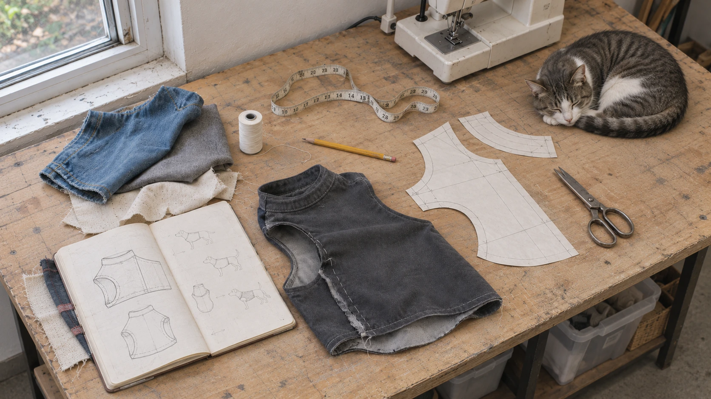

Our design approach
How we think about shape, materials, and the details that connect a collection.

Shape & fit
We start by considering the pet’s proportions and how a garment could move with the body.
Openings & coverage
Necklines, foreleg openings, and belly clearance guide the initial silhouette.
Proportions & dressing
Chest width, body length, and fastening methods need to work together. Sample reviews and fit adjustments help refine these details.
Color & texture
Cream, caramel, and dusty blue connect the first collection. Different textures give each series its own character.
Everyday
Clean trims and smooth-looking fabrics keep the focus on simple shapes.
Cozy
Fleece surfaces, cable-knit patterns, and quilting bring texture to the designs.
Together
Coordinated prints link pet bandanas with accessories for their people.
Our signature
Our heart-and-dog emblem expresses connection in a small, recognizable mark. Used as a detail, it links each piece to the collection.
From idea to product
1. Sketch the idea
Explore the garment’s shape, proportions, and place within the collection.
2. Choose materials & develop patterns
Translate the visual idea into fabric choices and construction details.
3. Review samples & fit
Check the proportions and refine openings, seams, and finishing details.
4. Confirm the specification
Finalize measurements, composition, and care instructions before release.
The first collection is in development. Final specifications and size guides will be published when confirmed.
Have a question?
Ask about a design, share your ideas, or tell us about a potential collaboration.
Get in touch